The Skyline Targeted Mass Spectrometry Environment provides informative visual displays of the raw mass spectrometer data you import into your Skyline documents. Originally developed for proteomics use, Skyline has been extended to work with generalized molecules. This tutorial explores a relatively straightforward example of using Skyline for targeted quantification of a single small molecule using an external calibration curve and stable-isotope labeled internal standard.
In this tutorial, you will learn about Targeted Quantification based on TQ-MS (in this example, out of crashed plasma) starting from a method you may already be running (e.g. a pharmacokinetic assay). In the analysis of this dataset you will learn:
You may also wish to view the second half of Skyline Tutorial Webinar 16, on which this tutorial is based.
Skyline aims to provide a vendor-neutral platform for targeted quantitative mass spectrometry research. It can import raw data from the instrument vendors Agilent, SCIEX, Bruker, Shimadzu, Thermo-Scientific, and Waters. The ability to import data across various instrument platforms facilitates cross-instrument comparisons and multi-site studies. This remains equally true in using it to target small molecules, as it has been for years in the field of proteomics.
If you have not already looked at the “Skyline Small Molecule Targets” tutorial you should do so now, in order to pick up a few basics about how Skyline works with small molecule descriptions including chemical formulas and adducts.
To start this tutorial, download the following ZIP file:
https://skyline.ms/tutorials/SmallMoleculeQuantification.zip
Extract the files in it to a folder on your computer, like:
C:\Users\bspratt\Documents
This will create a new folder:
C:\Users\bspratt\Documents\SmallMoleculeQuant
It will contain all the files necessary for this tutorial.
If you have been using Skyline prior to starting this tutorial, it is a good idea to revert Skyline to its default settings. To do so:
The document settings in this instance of Skyline have now been reset to the default.
Since this tutorial covers a small molecule topic, you can choose the molecule interface by doing the following:
Skyline is operating in molecule mode which is displayed by the molecule icon  in the upper right-hand corner of the
Skyline window. Its original proteomics menus and controls are now hidden, allowing you to focus on small molecule analysis.
in the upper right-hand corner of the
Skyline window. Its original proteomics menus and controls are now hidden, allowing you to focus on small molecule analysis.
This experiment was designed according to the FDA Guidance on Bioanalytical Method Validation, and as such contains much more than just the study samples. A full description of the plate layout and run order typically utilized for such a study has been published (https://www.ncbi.nlm.nih.gov/pubmed/29039849). Briefly, the samples for this dataset were laid out in a 96 well plate as follows:

Blanks, or “zero” standards, contain only the internal standard, double blanks contain no standard at all.
Calibration curve samples are a dilution series for calibration.
QC samples are “known unknowns”. These are quality control samples which are treated as unknowns in this study. In actuality, it is known what the results should be and thus they can be used to check the accuracy of measurements.
Serum SPQC is a serum pooled QC, a pooling of all study samples which is run at several points at the start, middle and end of the experiment to verify that quantitative reproducibility is constant across the study.
The NIST SRM 1950 is a pooled plasma standard from the National Institute for Standards and Technology, which is available to all researchers as a reference standard for “normal” plasma metabolite measurements. It serves as a reference between studies in different laboratories.
Injections were performed in this order:
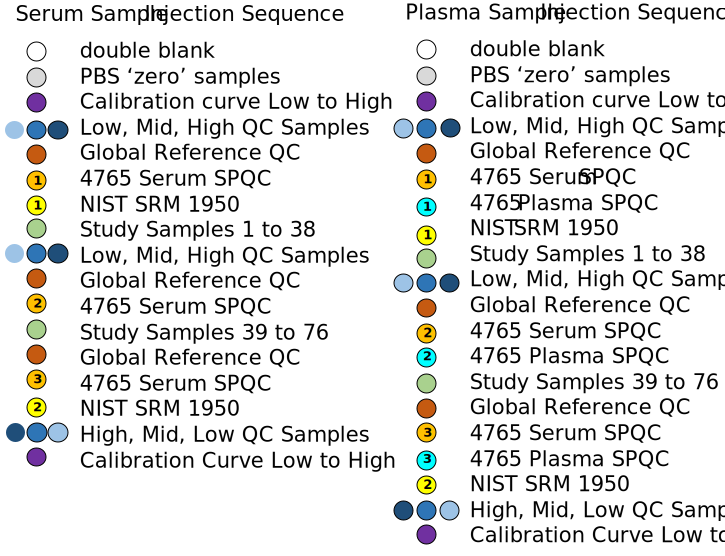
In all, 113 injections were used in collecting the mass spec data for these samples.
For this study there are just two targets: a molecule and an internal standard, which is an isotopically labeled variant of the molecule and thus co-elutes. It is also possible to establish a relationship between unrelated molecules by declaring one of the molecules as a surrogate standard. The surrogate standard method is covered in the “Skyline High Resolution Metabolomics” tutorial.
The easiest way to get a small molecule transition list into a Skyline document is to start with an empty document and use the Edit > Insert > Transition List menu item.
To begin, do the following:
Skyline will show the Insert Transition List form:

Normally, you would copy and paste a transition list from Excel or some other external source, but in this case, the transition list is small enough that we can just show it here:
DrugX,Drug,light,283.04,1,129.96,1,26,16,2.7
DrugX,Drug,heavy,286.04,1,133.00,1,26,16,2.7
Skyline shows the Import Transition List: Idenfity Columns form, where you can tell Skyline what each column means.
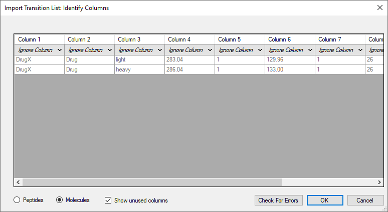
The data we copied did not have column headers, so initially each column is set as “Ignore Column”.
The Import Transition List: Identify Columns form should now look like this:
|
NOTE: In this tutorial, you have provided only m/z and charge values for these targets. Skyline can accept higher level descriptions including chemical formulas and heavy isotope labels etc. Having the chemical formula is especially useful when working with full scan, high resolution data as it allows Skyline to calculate isotopic distributions, but for SRM data such as this, using m/z and charge is adequate. |
To see the newly imported targets in full detail:
Your Skyline window should now look like this:
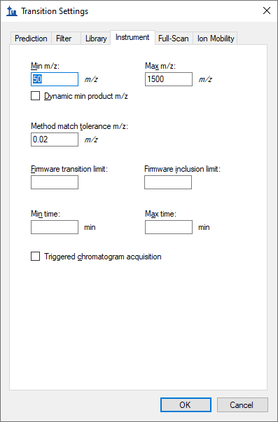
The next step is to make sure the transition settings are correct for importing the experimental mass spectrometer results. To do this, perform the following steps:
The Transition Settings form should now look like this:
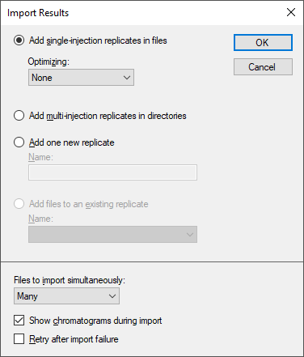
The Transition Settings form should now look like this:
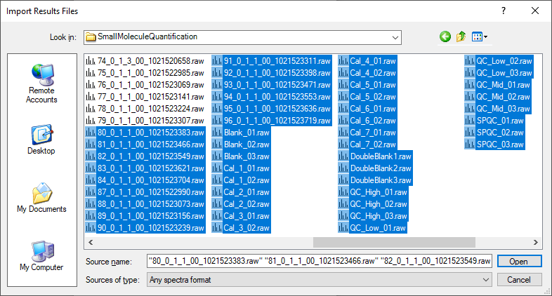
In the Ion types field, the value “f” indicates only fragment ion transitions will be measured. If you wanted to measure precursor ions as well, you would use “f, p”.
In the Instrument tab, the default values will work for this experiment. In your own work, however, make sure that the minimum and maximum m/z values make sense for your actual instrument. The purpose of these settings is to keep you from adding target transitions that your mass spectrometer is not actually able to measure.
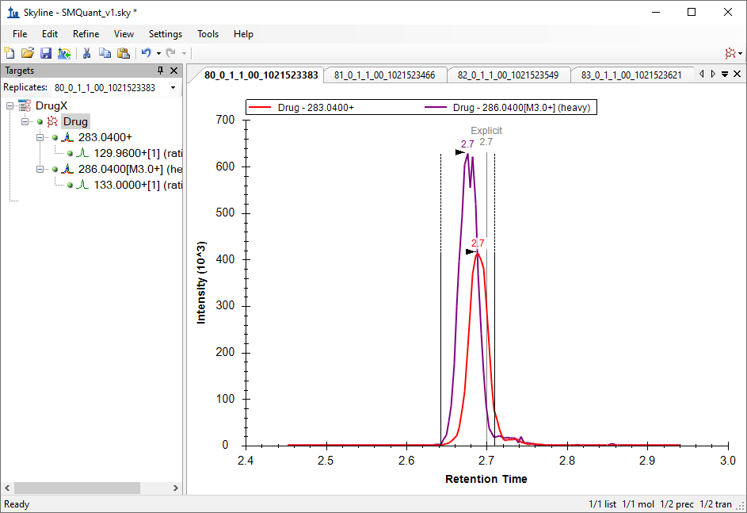
The Method match tolerance is another important setting in the Instrument tab. It determines how closely the m/z values from an instrument method – which get stored in the raw data files – must match the m/z values in the Skyline Targets list. The default value in Skyline is 0.055 because original SRM files used in testing were specified to one decimal place (e.g. 784.3) but included some slight rounding errors. If you export your methods from Skyline, you likely could use a much smaller tolerance.
The next step is to import the experimental mass spectrometer results.
This experiment has 113 mass spectrometer data files associated with it. In cases like this, it can be useful to initially import just a handful of the unknowns along with all of the calibration curve runs and quality control (QC) runs. Though, you may also wish to start out with an even less complicated document to verify data quality, importing only a few runs to start, perhaps the calibration curve runs with the highest concentrations.
Here you will take the more ambitious approach by performing the following steps:
The Import Results form should now look like this:
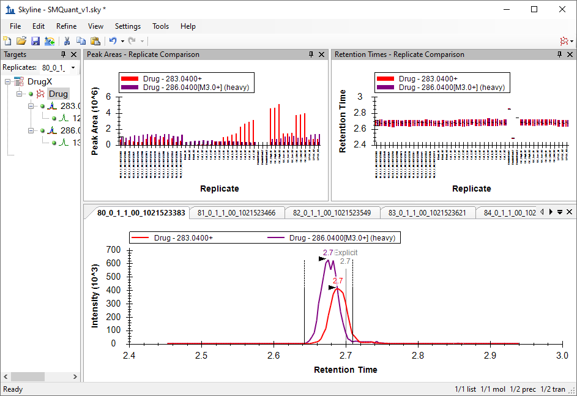
The Import Results Files form should look like:
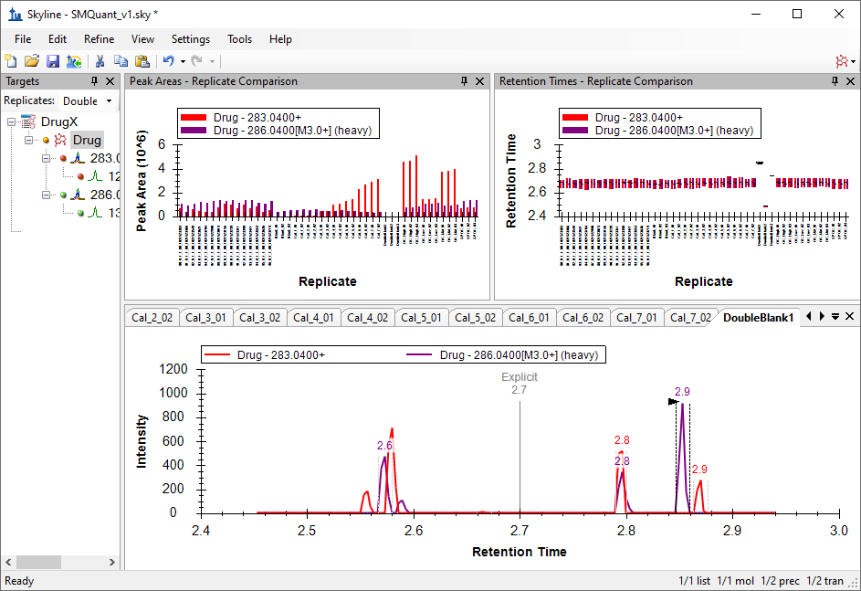
The files should import within 30 seconds or so, leaving your Skyline window looking like this:

To take advantage of the Skyline summary graphs for viewing individual targets, do the following:
The Skyline window should now look like this:

Looking at the Retention Times – Replicate Comparison window, you can see by the outliers in replicates with “DoubleBlank” in the name that Skyline has not chosen peaks at retention times consistent with the other replicates.
To have a closer look at the chromatograms for one of these runs do the following:
You would not actually expect Skyline to find a good peak for either the light or heavy form of the drug in this replicate, because the term “DoubleBlank” implies that neither is present in the sample. The chromatogram graph now shows you what peaks Skyline had to choose from:

This should reveal that DoubleBlank2 and DoubleBlank3 also lack any clear peak around the time 2.7 annotated with “Explicit”, meaning the method explicitly specified 2.7 minutes as the expected elution time. As these are also double blanks, you should not expect any actual peaks in these replicates, so you will next manually adjust the integration for each of the double blank replicates to center on the low signal area at 2.7 minutes.
To adjust peak integration, follow these steps:
 ).
).The peak boundaries will change to these new values, and the original range will be marked by a shaded area, as shown below:
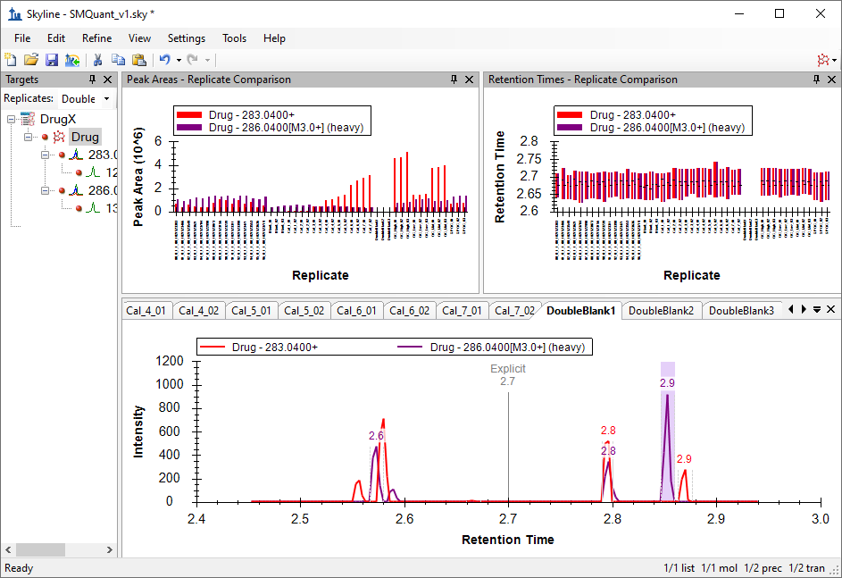
Repeat the steps above for the other two “DoubleBlank” replicates.
Next to set up quantitative calibration, perform the following steps:
The Molecule Settings form should look like this:

This experiment uses a linear regression fit, normalizing to the heavy labeled drug. Skyline offers options for weighting across the curve as a function of x: None, 1/x, and 1/(x*x). This tutorial uses a regression weighting of “1 / (x*x)” which increases the weight of the lower concentration calibration samples. The Units field is for display purposes, and can be set to any value that makes sense for your experiment. The concentrations in this experiment were calibrated in micromolar, so the Units field is set to “uM”.
The calibration curve is not quite ready to view yet. First you must declare the sample types and calibrated concentrations of various replicates.
The Document Grid will be used to examine and add information about the various replicates. The Document Grid is a highly useful tool in Skyline, providing spreadsheet-like views of many document details, many of which can be edited right in the grid. In this case, you need to supply details for the various replicates as follows:
The Document Grid should look like this:

By default all of the replicates have been given the Sample Type value of “Unknown”. This is the desired type for all of the replicates with names beginning with a number. Beyond these, you should do the following:
Everything in the multiple selection now has the same value as the first item in the selection.
Repeat as needed (or, skip ahead to the table below):
Recall that the “SPCQC_” replicates are quality control in a different sense (a pooling of all study samples), so those are left as “Unknown”.
Analyte concentrations can be entered by hand, but it is much easier to copy and paste them into the grid.
|
Blank |
||
|
Blank_02 |
Blank |
|
|
Blank_03 |
Blank |
|
|
Cal_1_01 |
Standard |
10 |
|
Cal_1_02 |
Standard |
10 |
|
Cal_2_01 |
Standard |
20 |
|
Cal_2_02 |
Standard |
20 |
|
Cal_3_01 |
Standard |
100 |
|
Cal_3_02 |
Standard |
100 |
|
Cal_4_01 |
Standard |
200 |
|
Cal_4_02 |
Standard |
200 |
|
Cal_5_01 |
Standard |
400 |
|
Cal_5_02 |
Standard |
400 |
|
Cal_6_01 |
Standard |
600 |
|
Cal_6_02 |
Standard |
600 |
|
Cal_7_01 |
Standard |
800 |
|
Cal_7_02 |
Standard |
800 |
|
DoubleBlank1 |
Double Blank |
|
|
DoubleBlank2 |
Double Blank |
|
|
DoubleBlank3 |
Double Blank |
|
|
QC_High_01 |
Quality Control |
589 |
|
QC_High_02 |
Quality Control |
589 |
|
QC_High_03 |
Quality Control |
589 |
|
QC_Low_01 |
Quality Control |
121 |
|
QC_Low_02 |
Quality Control |
121 |
|
QC_Low_03 |
Quality Control |
121 |
|
QC_Mid_01 |
Quality Control |
346 |
|
QC_Mid_02 |
Quality Control |
346 |
|
QC_Mid_03 |
Quality Control |
346 |
|
SPQC_01 |
Unknown |
|
|
SPQC_02 |
Unknown |
|
|
SPQC_03 |
Unknown |
The Document Grid should look like this when done: 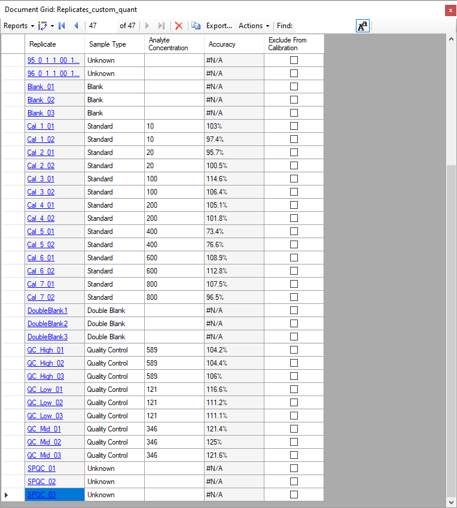
It is time to examine the calibration curve graph.
The Calibration Curve form should appear looking like this:
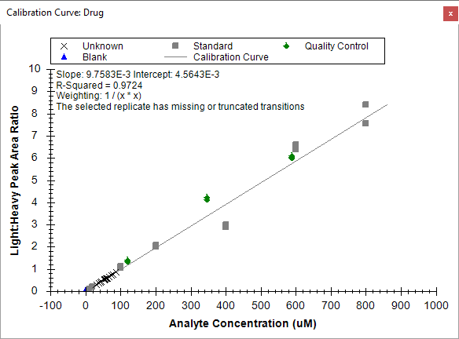
The note about the selected replicate missing transitions is expected, when the currently selected replicate is a double blank.
Looking at the graph, you can see the “Unknowns” appear as X marks mostly between the Light:Heavy ratios of 1.0 and 0.
You may also note that some of the calibration samples are not as close to the regression line as might have been hoped. By using the Document Grid to get a qualitative sense of just how far off they are, you can exclude any samples that are not suitable. To do that, follow these steps:
 and enter “accuracy” into the Find what field.
and enter “accuracy” into the Find what field.The Document Grid should now look like this: 
The FDA Guidance on which this assay was based states that calibration points should have bias < 15% (accuracy between 85% and 115%) between the known concentration and the back-calculated concentration from the calibration curve. Accuracy column shows that “Cal_5” does not meet that test. These replicates can be removed from consideration using the checkbox in the Exclude from Calibration column in the Document Grid, or by right-clicking on the outlier in the Calibration Curve form and clicking Exclude from Calibration. Follow these steps to remove the Cal_5 replicates from the calibration regression:
The Calibration Curve should now look like the image below. Note that the R-squared value improves from 0.97 to >0.99 by excluding the outlier “Cal_5” values.
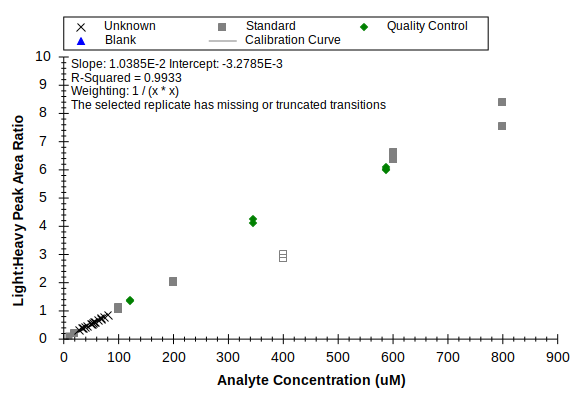
Next you should import the rest of the unknowns using the following steps:
A convenient way to view quantification data is to once again use the Document Grid, this time with the Molecule Ratio Results view.
The Document Grid should look like this:
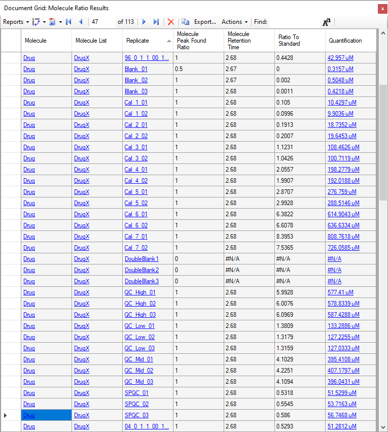
After removal of the two “Cal_5” datapoints, further exploration of the data reveals that one of the “Cal_7” points has accuracy <85% and should likely be removed. This will have little effect on the measurement of the samples, since there are no samples above the level of “Cal_6”, and only four samples have levels between “Cal 4” and “Cal 6”.
To enable easier visualization of the dynamic range of the samples along the calibration curve:
The calibration curve should look like this:
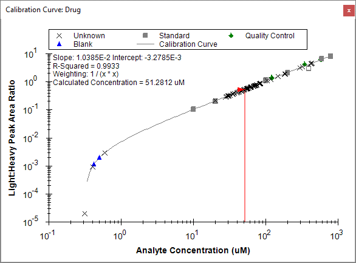
This presents a view which allows you to see at a glance that the samples mostly fall between “Cal_2” (20 uM) and “Cal_3” (100 uM), and well within the linear calibration range of the assay. The Quality Control samples (known unknowns, green diamonds in the graph) all have accuracy measured between 85 and 115%, which meets the FDA Guidance criteria.
From here, the next steps would be to export the data for external statistical processing, or to establish biological grouping within this document and to utilize some of the statistical analysis tools or plugins within Skyline. These options are covered in other tutorials.
In this tutorial, you have learned how to create a Skyline document that targets small molecules specified as precursor ion chemical formulas and adducts, and product ion m/z values. You imported a multi-replicate data set collected using LC-MS/MS on a triple quadrupole, and saw how many existing Skyline features created initially for targeted proteomics use can now be applied to small molecule data.